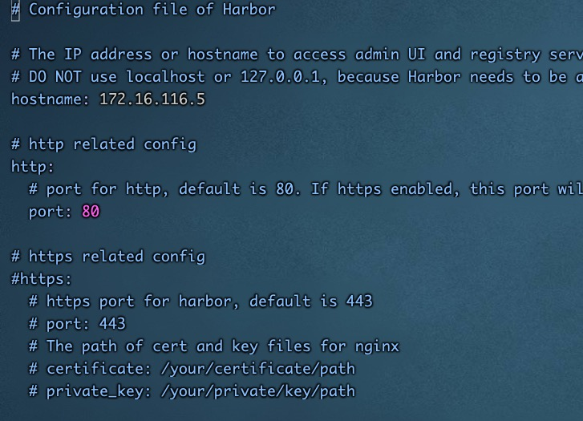
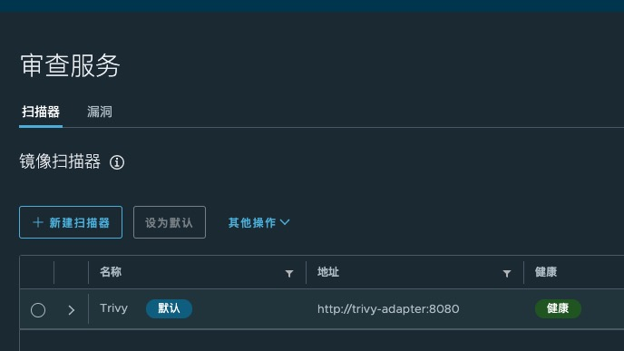
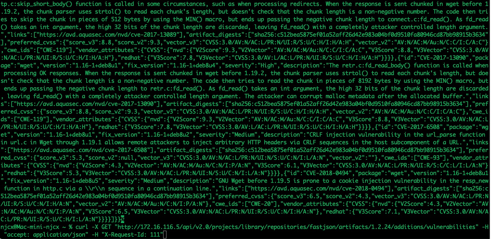
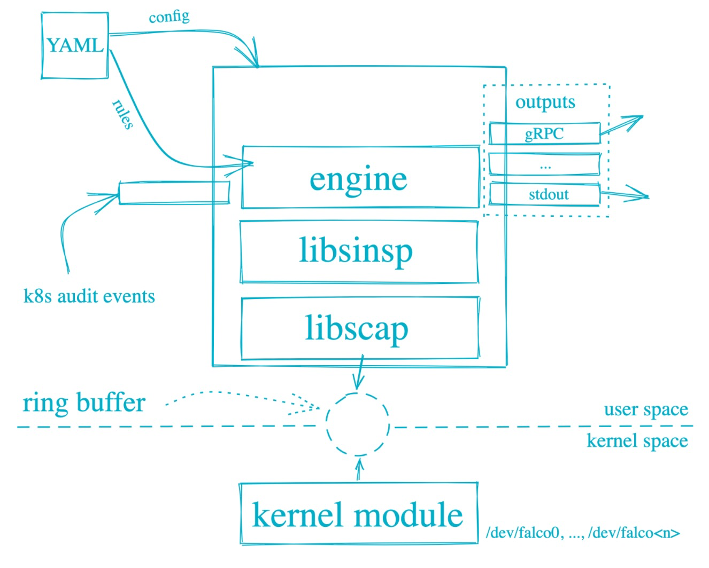

介绍
k8s环境的安全主要来自3个方向：
1， images 镜像的安全问题
2, k8s 的配置和使用问题
3， k8s 自身组件和操作系统及其依赖组件的安全问题
# cd /etc/yum.repos.d/
# wget http://mirrors.aliyun.com/docker-ce/linux/centos/docker-ce.repo
# yum makecache
# yum install docker-ce -y && systemctl start docker && systemctl enable docker
# vim /etc/docker/daemon.json
{
"exec-opts": ["native.cgroupdriver=systemd"],
"registry-mirrors": ["https://docker.mirrors.ustc.edu.cn"]
}
# systemctl restart docker
# curl -L "https://github.com/docker/compose/releases/download/1.23.2/docker-compose-$(uname -s)-$(uname -m)" -o /usr/local/bin/docker-compose
# chmod +x /usr/local/bin/docker-compose
# wget https://github.com/goharbor/harbor/releases/download/v2.2.3/harbor-offline-installer-v2.2.3.tgz
# tar xf harbor-offline-installer-v2.2.3.tgz
# cp harbor.yml.tmpl harbor.yml
# ./prepare
# ./install.sh --with-trivy --with-chartmuseum





/projects/{project_name}/repositories/{repository_name}/artifacts/{reference}/additions/vulnerabilities
curl -X GET "http://172.16.116.5/api/v2.0/projects/library/repositories/fastjson/artifacts/1.2.24/additions/vulnerabilities" -H "accept: application/json" -H "X-Request-Id: 111"

K8S runtime 的监控
Falco 由 Sysdig 于 2016 年创建，是第一个作为孵化级项目加入 CNCF 的运行时安全项目。Falco可以对Linux系统调用行为进行监控，主要是用的eBPF技术。Falco的主要功能如下： 从内核运行时采集Linux系统调用。 提供了一套强大的规则引擎，用于对Linux系统调用行为进行监控。 当系统调用违反规则时，会触发相应的告警。
curl -s https://falco.org/repo/falcosecurity-3672BA8F.asc | apt-key add -
echo "deb https://download.falco.org/packages/deb stable main" | tee -a /etc/apt/sources.list.d/falcosecurity.list
apt-get update -y
apt-get -y install linux-headers-$(uname -r)
apt-get install -y falco
rpm --import https://falco.org/repo/falcosecurity-3672BA8F.asc
curl -s -o /etc/yum.repos.d/falcosecurity.repo https://falco.org/repo/falcosecurity-rpm.repo
yum -y install kernel-devel-$(uname -r)
yum -y install falco
https://falco.org/docs/getting-started/installation/

json_output: true
json_include_output_property: true
http_output:
enabled: true
url: "http://localhost:2801"
https://github.com/falcosecurity/falcosidekick.git
```bash
elasticsearch: hostport: "http://10.10.116.177:9201" # http://{domain or ip}:{port}, if not empty, Elasticsearch output is enabled index: "falco" # index (default: falco) type: "event" minimumpriority: "" # minimum priority of event for using this output, order is emergency|alert|critical|error|warning|notice|informational|debug or "" (default) suffix: "daily" # date suffix for index rotation : daily (default), monthly, annually, none mutualtls: false # if true, checkcert flag will be ignored (server cert will always be checked) checkcert: true # check if ssl certificate of the output is valid (default: true) username: "" # use this username to authenticate to Elasticsearch if the username is not empty (default: "") password: "" # use this password to authenticate to Elasticsearch if the password is not empty (default: "")
kafka: hostport: "" # Apache Kafka Host:Port (ex: localhost:9092). Defaults to port 9092 if no port is specified after the domain, if not empty, Kafka output is enabled topic: "" # Name of the topic, if not empty, Kafka output is enabled # minimumpriority: "debug" # minimum priority of event for using this output, order is emergency|alert|critical|error|warning|notice|informational|debug or "" (default)
```